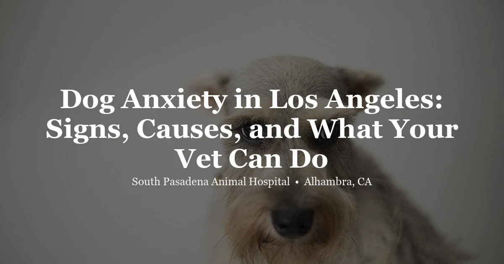

April 20, 2026 · 7 min read
Dog Anxiety in Los Angeles: Signs, Causes, and What Your Vet Can Do

Anxiety is one of the most common reasons dog owners seek veterinary guidance — and one of the most undertreated. Many owners assume anxious behavior is just “personality” or something to manage with reassurance, but chronic, untreated anxiety causes real suffering and often gets worse over time. The good news: there are effective tools. If you’re looking for a starting point, a visit to our Alhambra dog vet is the right first step.
Recognizing Anxiety in Dogs
Anxiety presents differently depending on the dog and the trigger. Some dogs are obvious about their distress; others show subtle signs that owners write off as quirks. Common signs include:
- Destructive behavior when left alone (a hallmark of separation anxiety)
- Excessive barking, whining, or howling
- Panting, yawning, or lip-licking at rest — these are calming signals and stress indicators, not just boredom
- Pacing or an inability to settle even in familiar, calm environments
- Hiding or attempting to escape
- Trembling during thunderstorms or fireworks
- Aggression — fear-based aggression is the most common form of aggression in dogs
- House-training regression in an otherwise reliable dog
- Loss of appetite in certain contexts
- Excessive licking or chewing at themselves
If your dog shows several of these signs consistently — especially in specific contexts — anxiety is worth taking seriously.
The Most Common Anxiety Triggers
Separation anxiety is distress when left alone, and it’s often the most disruptive type for households. Signs include destruction near exits, indoor soiling, and neighbor complaints about barking while you’re out. It’s not defiance — it’s a panic response.
Noise phobia is triggered by thunderstorms, fireworks, or other loud sounds. LA’s year-round event calendar — July 4th, New Year’s Eve, and the informal neighborhood fireworks that seem to happen all summer — makes this a particularly significant issue locally. Dogs with noise phobia often have predictably terrible nights several times a year.
Social anxiety or fear of strangers and other dogs is common in under-socialized dogs or those with a history of negative experiences. It can show up as avoidance, cowering, or reactivity on leash.
Generalized anxiety has no single clear trigger. These dogs are chronically hypervigilant, startle easily, and can’t seem to relax regardless of the situation. They’re often described as “nervous dogs” by their owners.
Medical anxiety is easy to overlook: pain, cognitive dysfunction in senior dogs, thyroid disorders, and other medical conditions can all manifest as anxiety. This is always worth ruling out with a physical exam before attributing behavioral changes purely to psychology.
When to Involve a Vet
Owners often try to manage anxiety with training videos and management strategies for months or even years before seeking veterinary help. That’s understandable — but a vet visit is warranted when:
- Anxiety is significantly impacting quality of life — yours or your dog’s
- Self-injury is occurring (chewing paws raw, breaking teeth on crates)
- Safety is a concern due to fear-based aggression
- Environmental management and basic training haven’t produced meaningful improvement
A wellness exam rules out medical causes and opens the door to a broader conversation about management strategies. You don’t need to wait until something goes seriously wrong.
What Treatment Actually Looks Like
Effective anxiety management is almost never one thing — it’s a combination of approaches tailored to the individual dog.
Behavior modification is the foundation. Desensitization and counter-conditioning — gradually changing your dog’s emotional response to triggers through careful, positive exposure — are the gold standard. This takes time and consistency. A certified trainer (CPDT-KA) or a veterinary behaviorist (DACVB) can build the specific protocol and coach you through it.
Environmental management reduces exposure to triggers while behavior modification is in progress. This might mean covered crates, white noise machines, puzzle feeders to occupy a dog during departures, or structured separation routines for dogs with departure anxiety. Management doesn’t fix the anxiety, but it prevents repeated panic episodes that can entrench the problem.
Supplements and calming aids have modest but real evidence for mild anxiety. L-theanine, certain milk proteins (Zylkene), and melatonin for noise phobia are commonly used. These aren’t magic bullets, but they can take the edge off and complement other approaches. Thundershirts and similar pressure wraps work for some dogs.
Prescription medication makes a significant difference for moderate to severe anxiety. SSRIs (fluoxetine, sertraline) and tricyclic antidepressants (clomipramine) are used for chronic anxiety — they’re not sedatives; they reduce baseline anxiety over weeks of daily use, making behavior modification more achievable. Fast-acting medications (trazodone, gabapentin, alprazolam) are used situationally for predictable high-anxiety events like vet visits, travel, or fireworks. Medication works best when combined with behavior modification, not as a standalone solution.
Laser therapy as an adjunct: some dogs with anxiety also experience chronic pain from arthritis or hip dysplasia that compounds their overall arousal level. Pain relief through laser therapy can meaningfully reduce baseline stress in these dogs. It’s not a primary anxiety treatment, but it’s worth considering if pain is part of the picture.
A Note on Punishment
Punishing anxious behavior — scolding, alpha rolls, spray bottles, shock collars — does not treat anxiety. It consistently makes it worse by adding another negative association to an already frightened dog. It can also erode your dog’s trust in you, which is counterproductive for any behavior modification work. If a trainer ever recommends these approaches for an anxious dog, seek a second opinion from someone who uses force-free methods.
Frequently Asked Questions
Is my dog anxious or just “high energy”?
High-energy dogs are enthusiastic and playful but are capable of settling when the environment is calm — they relax at rest, sleep soundly, and aren’t distressed in specific contexts. Anxious dogs often can’t settle, show stress signals (panting, yawning, pacing) even at rest, and tend to be noticeably worse in particular situations. The two can coexist, but they’re different problems requiring different approaches.
Will my dog need medication forever?
Not necessarily. Some dogs do best on long-term daily medication; others can taper off after behavior modification has meaningfully changed their baseline response to triggers. This is a conversation for your vet based on your dog’s response to treatment over time. We don’t prescribe with the expectation of lifetime use — we reassess as your dog progresses.
Can anxiety get worse as dogs age?
Yes. Cognitive dysfunction syndrome in senior dogs often presents as new or worsening anxiety — particularly nighttime restlessness, disorientation, and increased clinginess. Any new anxiety onset in an older dog warrants an exam to rule out medical causes including pain, cognitive changes, or other age-related conditions before assuming it’s behavioral.
My dog is only anxious at the vet. Is that normal?
Very common — and manageable. Please let us know before your visit. We can discuss pre-visit medication to take the edge off, and we can go at a slower pace to start building more positive associations over time. A frightened dog isn’t a cooperative patient, and we’d rather invest a little more time making visits easier than put you both through unnecessary stress.
Do you see dogs for anxiety-related concerns at SPAH?
Yes. We’ll start with a thorough physical exam and a conversation about what you’re observing. From there we can talk through a realistic management plan. Book an appointment online or call us at (626) 441-1314.
The Bottom Line
Anxiety is a real medical issue, not a training failure or a personality flaw. It responds well to the right combination of behavior modification, environmental management, and — when warranted — medication. The earlier you address it, the easier it is to treat. If your dog’s anxiety is affecting their daily life, a wellness visit is the right starting point. Reach out and we’ll figure out the best path forward together.